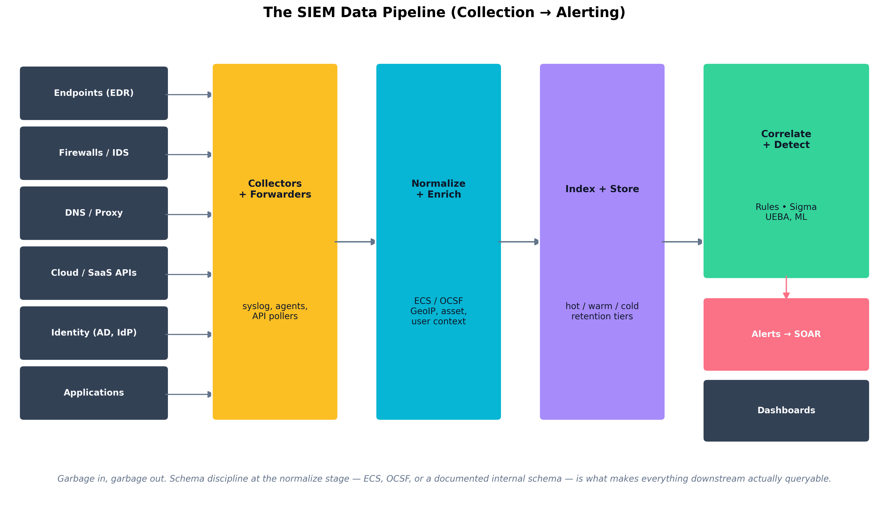
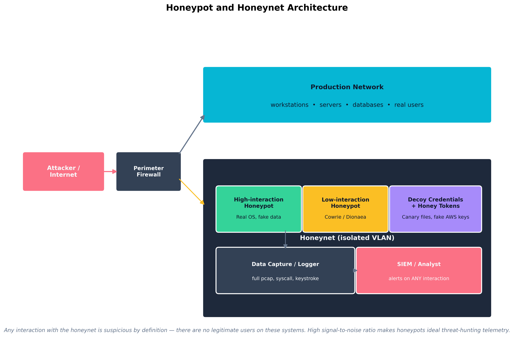

Chapter 11: Security Operations, Monitoring, and Threat Hunting
Learning Outcomes:
- Analyze data from SIEM solutions to identify trends, prioritize alerts, and reduce audit logs.
- Establish behavior baselines and analytics for networks, systems, users, and applications (UBA/UEBA).
- Incorporate diverse data sources into monitoring activities.
- Formulate alerting rules and metrics to minimize false positives and measure security effectiveness.
- Apply threat-hunting concepts using hypothesis-based searches, honeypots, and internal reconnaissance.
- Evaluate external threat intelligence sources, including OSINT, dark web monitoring, and ISACs.
- Implement threat intelligence platforms (TIPs) and indicator of compromise (IoC) sharing standards (STIX/TAXII).
- Develop rule-based detection logic using languages such as Sigma, YARA, and Snort.
Introduction
The previous chapters built defenses. This chapter is about watching them — turning the volumes of telemetry that every modern environment produces into actionable signal, baselining what “normal” looks like so anomalies stand out, hunting for adversaries who managed to slip past the preventative controls, and learning from the global threat-intelligence community so each organization is not detecting everything from scratch.
The hard problem in security operations is no longer collecting data — every endpoint, firewall, identity provider, cloud service, and application produces logs by default. The hard problem is making sense of it: which records are worth an analyst’s attention, which alerts are worth waking someone up over, and which gaps in coverage are the ones an adversary will exploit. A mature SOC measures itself not by the number of events ingested but by mean time to detect (MTTD), mean time to respond (MTTR), and how many real incidents it catches versus how many escape into the post-incident review of “why did we have telemetry but no alert?”
We start with the SIEM pipeline — collection, normalization, storage, correlation — because everything in this chapter depends on that data plane working. We then move to behavioral baselines (UEBA) that let anomalies surface without explicit rules, proactive threat hunting that goes looking for adversaries on a hypothesis rather than waiting for alerts, and finally the external threat intelligence ecosystem (OSINT, ISACs, STIX/TAXII, YARA/Sigma) that lets a defender benefit from what the rest of the industry has already learned.
How Do We Make Sense of Security Data?
A modern enterprise produces tens of billions of log records a day across endpoints, network devices, identity systems, cloud services, and applications. None of that data is useful in raw form. The discipline of turning it into signal is Security Information and Event Management (SIEM) — historically a category of product (Splunk, IBM QRadar, Microsoft Sentinel, Elastic Security, Chronicle, Sumo Logic), increasingly a pattern that combines a data lake, a detection engine, and a workflow layer regardless of vendor.
SIEM Log Aggregation and Correlation
A SIEM pipeline has five stages, each with its own failure modes.
- Collection. Agents and forwarders pull or receive logs from sources: syslog from network devices, the Windows Event Log via WEF, EDR telemetry via vendor APIs, cloud audit logs (AWS CloudTrail, Azure Activity Log, GCP Cloud Audit Logs) via streaming, application logs via Fluent Bit / Vector / Filebeat, identity provider logs via API.
- Normalization and enrichment. Raw records are parsed into a consistent schema — increasingly the Elastic Common Schema (ECS) or the Open Cybersecurity Schema Framework (OCSF) — and enriched with context the raw record lacks: GeoIP, asset criticality, user role, threat-intelligence overlap.
- Storage and indexing. Normalized data is written into a searchable store, typically with hot / warm / cold retention tiers — fast SSD for recent days, slower object storage for months-to-years, archive for compliance retention.
- Correlation and detection. Rules — written in vendor-specific languages or the cross-platform Sigma standard — combine multiple events into higher-level alerts. UEBA models flag statistical anomalies the rules would never have anticipated.
- Alerting, dashboards, and response. Alerts route to analysts; dashboards summarize trends; SOAR playbooks (Chapter 12) automate response on the most common patterns.

Figure 11.1: The SIEM pipeline flows from heterogeneous sources through collectors and forwarders into a normalization-and-enrichment stage, then into indexed storage, correlation and detection, and finally to alerts, dashboards, and SOAR workflows. Schema discipline at the normalize stage is what makes everything downstream queryable across data sources.Example
A Sigma rule detecting suspicious scheduled task creation
Sigma is a vendor-neutral detection language that compiles into a given SIEM’s query syntax. A rule that fires when a Windows scheduled task is created by a machine or service account — but not by a known-legitimate system process — looks like this:
title: Suspicious Scheduled Task Creation status: test logsource: product: windows service: security detection: selection: EventID: 4698 # "A scheduled task was created" SubjectUserName|endswith: '$' # machine/service account filter_legitimate: ParentCommandLine|contains: - 'svchost.exe' - 'taskeng.exe' condition: selection and not filter_legitimateEvent ID 4698 fires whenever a task is registered. The
SubjectUserNamefilter narrows to machine or service accounts (which end in$); the exception list suppresses the legitimate system schedulers. A new scheduled task registered by an unexpected account — a pattern common in persistence after initial access — triggers the alert.Run
sigmac -t splunkon this rule and it becomes Splunk SPL. Run it with-t sentineland it becomes KQL for Microsoft Sentinel. One rule, any SIEM — and it lives in Git with a commit history and ATT&CK annotation (T1053.005) so coverage maps stay accurate.
Quick Check 11.1
- Recall. Name the five stages of the SIEM pipeline described in the chapter.
- Discriminate. Cloud-audit logs and EDR logs both arrive, but analysts cannot correlate them because their field names and structures do not line up. Which SIEM stage is failing?
- Apply. Your SOC is moving from one SIEM platform to another but wants to keep a suspicious-scheduled-task detection portable and auditable. What two practices from the section help most?
Answers — Quick Check 11.1
- Collection, normalization and enrichment, storage and indexing, correlation and detection, and alerting, dashboards, and response.
- Normalization and enrichment. Without a shared schema, cross-source joins become fragile or impossible.
- Write the rule in Sigma and manage it as detection-as-code in Git. That gives portability across SIEMs and an auditable review history.
Prioritizing Alerts and Reducing Noise
Most SOCs do not fail because they detect too little — they fail because they detect too much. An analyst who receives 400 alerts a day cannot triage them with care; some will be ignored, and the ignored ones will eventually include real attacks. Five disciplines reduce this:
- Tune at the source. Suppress noisy events at the agent or forwarder rather than ingesting and then filtering them — every byte that does not need to be stored is cost saved and noise removed.
- Stage alerts by severity, asset criticality, and user privilege. An alert on a domain controller from a domain admin’s account is not the same priority as the same alert on a workstation.
- Use detection-as-code. Detections live in a Git repository, get code review, are versioned, and are retired when they outlive their usefulness — the same engineering rigor as application code.
- Maintain a known-noise allowlist. Vulnerability scanners, internal penetration tests, and developer experiments should be enumerable so they do not trip detections.
- Measure false-positive rate (FPR) per detection. A rule with a 95% FPR is doing more harm than good and should be tuned or retired.
Key Point Coverage gaps and noise are two sides of the same problem. You cannot tell an analyst to “look harder” past the noise — you have to engineer the noise down before they can see signal. The MITRE ATT&CK framework is increasingly used to measure coverage gap-by-gap: which techniques does the org have detections for, at what fidelity, and where are the holes?
Diverse Data Sources
Every additional data source the SIEM correlates against multiplies its detective power, but only if the data is parsed correctly and the right relationships are modeled. The high-leverage sources for any modern SOC:
- Endpoint (EDR). Process creation, file write, registry edit, network connection, syscall pattern.
- DNS. Query logs from the recursive resolver — extraordinarily high signal-to-noise for malware C2.
- Authentication. Active Directory and identity-provider logs (Entra ID, Okta) — the substrate of every credential-based attack.
- Cloud control plane. CloudTrail / Activity Log / Audit Logs — captures every API call.
- DLP. Egress and copy-paste events.
- Vulnerability scan results. Posture context that informs alert prioritization.
- Email gateway. Delivery, signature failure, sandbox detonation results.
- Third-party security telemetry. CASB, CSPM, attack-surface management feeds.
| Property | STIX (Structured Threat Information eXpression) | TAXII (Trusted Automated eXchange of Indicator Information) |
|---|---|---|
| What it is | A language / data model for describing threat intelligence | A transport protocol for exchanging threat intelligence |
| Layer | Information layer | Transport layer |
| Current version | STIX 2.1 (2021) | TAXII 2.1 (2021) |
| Format | JSON objects (indicators, malware, campaigns, threat actors, TTPs, sightings) | HTTPS REST API with collections and channels |
| Typical use | Encoding IoCs, ATT&CK mappings, campaign descriptions | Pulling / pushing STIX bundles between TIPs, ISACs, and vendors |
| Analogy | Like the language of an email | Like the SMTP protocol that carries it |
The current OASIS CTI ecosystem centers on STIX 2.1 and TAXII 2.1, with STIX defining the data model and TAXII defining the exchange protocol (OASIS Open Cyber Threat Intelligence Technical Committee 2021a, 2021b).
Dashboards, Reporting, and Security Metrics
Dashboards exist for two audiences with very different needs:
- Operational dashboards (for analysts) show real-time alert queues, dwell on open cases, current investigation status, and the day-over-day trend on top noisy detections.
- Executive dashboards (for leadership) show longer-horizon metrics: MTTD, MTTR, alert volume by severity, coverage against MITRE ATT&CK, incident counts by type, and trend lines on the security KPIs the program is committed to. Vanity metrics like “number of events processed” should be ruthlessly resisted; they grow with the data, not the defenders’ effectiveness.
Example
A high-fidelity multi-source detection
The single highest-value detection in many SOCs is not exotic — it is the cross-source correlation of three boring events on the same user within minutes:
- An authentication from an unfamiliar country / ASN to an identity provider (Okta, Entra ID).
- A mailbox rule created shortly after that auth that forwards or auto-deletes mail (a hallmark of business email compromise).
- An OAuth grant to an unfamiliar third-party application requesting mail-read permissions.
Individually, each event has a substantial false-positive rate — travelers exist, users do legitimately create rules, OAuth apps are not all malicious. Together within a fifteen-minute window on the same user account, they are nearly diagnostic of credential compromise. The detection requires authentication logs, mailbox audit logs, and OAuth grant logs all in the same SIEM with a shared user identifier. None of that is exotic. Most organizations simply have not connected the data.
Quick Check 11.2
- Recall. Which two outcome metrics does the chapter treat as more meaningful than “number of events ingested”?
- Discriminate. The same alert fires once on a domain controller using a domain-admin account and once on a low-value workstation using a standard user. Which should be triaged first, and why?
- Apply. A SOC receives 400 alerts a day, many from vulnerability scanners and known developer tests. Name three noise-reduction steps from the chapter.
Answers — Quick Check 11.2
- MTTD and MTTR. They measure whether the security team is actually detecting and responding effectively.
- The domain-controller and domain-admin alert should go first because asset criticality and privilege level both raise the likely impact dramatically.
- Tune noisy events at the source, maintain a known-noise allowlist, and measure false-positive rate per detection so weak rules get tuned or retired. The chapter also recommends staging alerts by severity and criticality.
How Do We Baseline Normal Behavior?
Rules are the most explicit way to detect — “if X then alert” — but rules can only catch things you anticipated. Behavioral analytics flip the problem around: learn what is normal for each user, host, network segment, and application, then alert on statistically significant deviations.
User and Entity Behavior Analytics (UEBA)
User and Entity Behavior Analytics (UEBA) systems build per-entity baselines from historical telemetry and detect anomalies against those baselines. Modern UEBA capabilities include:
- Per-user feature vectors. Typical login hours, geographies, devices, applications, peer group membership, data-access patterns.
- Per-host baselines. Normal process trees, child-process relationships, outbound destinations, scheduled-task inventories.
- Peer-group analysis. A finance analyst accessing engineering source control is suspicious not because access is impossible — it might be authorized — but because peers in finance do not do it.
- Risk scoring. Anomalies compose into a numerical risk score per entity. Users above a threshold surface for analyst review, with the constituent anomalies linked.
- Adaptive thresholds. Baselines update as the environment evolves; static thresholds rot quickly.
UEBA shines against three classes of threat that static rules struggle with: compromised credentials (the attacker has valid login but does not behave like the user), insider threats (the user has legitimate access but is using it abnormally), and lateral movement post-compromise (an attacker on a foothold host is reaching systems the host never reached before).
Identifying Anomalies in Systems and Apps
UEBA is not limited to users. Entity behavior generalizes the idea to any first-class object: workstations, servers, service accounts, applications, IoT devices. The most fruitful anomalies in practice are usually the unglamorous ones:
- A service account suddenly performing interactive logons.
- A backup server initiating outbound HTTPS to an unfamiliar destination.
- A workstation generating DNS queries at 4× its normal rate at 2 a.m.
- A database that has historically responded only to three application accounts beginning to receive queries from a new source.
- An EDR agent that has stopped reporting from a host that is still pinging on the network.
Each of those anomalies is hard to express as a static rule and almost impossible to anticipate by name — but easy to detect once you have a baseline.
Case Study
Hamlet, the Insider, and the Off-Hours Database Queries
Hamlet, threat hunter at Denmark Cyber Defense, is reviewing the weekly UEBA risk-score report on a Wednesday morning when one entity stands out: a developer account belonging to a contractor who has been with the firm for nine months. The score is 78 out of 100, up from a baseline near 5, accumulated over the past eleven days.
Hamlet clicks through. The constituent anomalies tell a story when read together:
- Eleven nights running, the account has logged into a database read-replica at roughly 11:30 p.m. — outside the user’s historical 9 a.m. – 6 p.m. login pattern. The replica is one the user has access to but has never used in nine months on the job.
- The queries run against the replica are unusually large —
SELECT *across the customer table, withLIMITvalues incrementing each night (1000, then 5000, then 25000) as if the user were testing what size of result would not trigger alarms.- The result sets are written to a local CSV under the user’s home directory on the developer workstation, and the workstation’s outbound HTTPS volume in the half-hour after each query is roughly 4× the user’s baseline — but split across multiple destinations including a personal cloud storage domain.
- The user has not opened the company chat app or email between 11 p.m. and 6 a.m. on any of those eleven nights — they are awake and active only on the database and the file uploads.
No individual event would have tripped a static rule. The database access is technically authorized. The hours are unusual but not impossible. The data volumes are within ordinary day-to-day variance for a developer pulling test data. Even the personal cloud storage upload, in isolation, would have produced a low-priority DLP alert that the queue routinely dismissed.
Together, the pattern is unmistakable. Hamlet escalates to the incident response team, who pull the workstation’s EDR timeline and confirm a script that automates the SELECTs and uploads. HR and legal are looped in; the contractor’s access is suspended pending investigation. The full extracted volume — about 380,000 customer records over the eleven-day window — is recovered from the personal cloud storage provider through a preservation-and-disclosure process, and not (so far as can be determined) exfiltrated further.
The post-incident review produces two changes. The UEBA risk-score threshold for off-hours database access is lowered for accounts that have never historically accessed that database, even when access is technically permitted. And a separate DLP rule is added for the specific personal-cloud-storage domain involved, since the company already used a different provider sanctioned for business use.
The case is the textbook example of why behavioral analytics matter: an attacker — internal or external — who has legitimate access is invisible to access-control alone. Only deviation from baseline reveals them.
Quick Check 11.3
- Recall. Besides users, what kinds of entities does UEBA baseline in the chapter?
- Discriminate. A service account suddenly begins performing interactive logons. Why is that a strong UEBA anomaly even if the account is technically valid?
- Apply. In Hamlet’s case, what combination of signals turned technically authorized database access into a likely insider incident?
Answers — Quick Check 11.3
- UEBA baselines hosts, service accounts, applications, and other entities, not just human users.
- It violates the account’s normal baseline. Service accounts are supposed to act like services, not like people logging in interactively.
- The decisive pattern was off-hours first-time use of the
replica, progressively larger
SELECT *exports, local CSV staging, and unusual outbound HTTPS to personal cloud storage. No single event was enough; the composition was.
How Do We Proactively Hunt for Threats?
Detective controls catch attackers when they trip an alarm. Threat hunting assumes the alarms have already failed — that some adversary is already inside the environment, evading detection — and goes looking for them based on a hypothesis about how they would behave. Hunting is what separates a reactive SOC from a proactive one.
Internal Reconnaissance and Honeypots
A threat hunt starts with a hypothesis (“an adversary using technique X would leave artifact Y”) and ends with one of three outcomes: an incident, a new detection that operationalizes what was learned, or a documented coverage confirmation. The hunt itself draws on the same telemetry the SIEM already ingests, but interrogated by a human asking questions a rule could not.
Honeypots and honeynets are deception infrastructure that produce extraordinarily high-fidelity signal precisely because there is no legitimate reason for anyone to interact with them. A honeypot is a single decoy system; a honeynet is an isolated network of them.
- Low-interaction honeypots (Cowrie, Dionaea, Honeyd) emulate services with limited functionality. They are easy to deploy, hard to compromise meaningfully, and useful for capturing automated scanning, credential-stuffing, and worm-style attacks.
- High-interaction honeypots are real systems with real operating systems and applications, instrumented to capture every action. They produce richer intelligence about attacker tradecraft, at the cost of more careful containment to prevent them from being used as a pivot.
- Honey tokens / honey credentials. Decoy secrets placed in real systems — a “honey” AWS access key in a developer’s home directory, a fake admin password in a vault entry, a canary file on a fileshare. Any use of these tokens generates a high-confidence alert. CanaryTokens.org and similar services have made honey tokens extremely cheap to deploy.

Figure 11.2: A honeynet is an isolated VLAN containing decoy systems and tokens, with every interaction logged and alerted. Because no legitimate users have any reason to touch these systems, the signal-to-noise ratio approaches one — every alert is worth investigating.Hypothesis-Based Searches
A useful hunt is built on a specific, testable hypothesis. Examples:
- Hypothesis: an adversary using BloodHound for AD reconnaissance would issue distinctive LDAP queries. Telemetry: domain controller LDAP query logs. Test: search for LDAP filter patterns characteristic of BloodHound collection.
- Hypothesis: a Cobalt Strike beacon configured with a particular sleep-and-jitter pattern would produce regular outbound HTTPS connections at predictable intervals. Telemetry: netflow + DNS. Test: find hosts whose outbound HTTPS shows strong periodicity over the past 30 days.
- Hypothesis: an attacker performing Kerberoasting would request service tickets for accounts with weak service principal names. Telemetry: Windows Event ID 4769. Test: aggregate 4769 events by requesting account, looking for one account requesting many SPNs in a short window.
- Hypothesis: a malicious browser extension on a developer workstation would exfiltrate clipboard contents to an unfamiliar domain. Telemetry: DNS + EDR network connection. Test: compare developer-workstation DNS query destinations against a known-good baseline.
A hunt that finds something becomes an incident. A hunt that finds nothing becomes a new detection rule that will continue to look for the same pattern automatically — and a documented record of coverage that auditors and leadership can point to.
Case Study
Marriott / Starwood (2014–2018): Four Years of Undetected APT Access
In September 2018, Marriott International disclosed that an unauthorized party had been inside the reservation database of its Starwood subsidiary since 2014. At disclosure time, Marriott said the affected database contained information on up to approximately 500 million guests, including names, mailing addresses, phone numbers, email addresses, passport numbers, Starwood loyalty account information, dates of birth, and in some cases payment card data (Marriott International 2018).
The exposure came to light after Marriott received an alert from an internal security tool regarding an attempt to access the Starwood guest reservation database in the United States. Pulling on that thread led investigators to a longer history of unauthorized access in the Starwood network that had persisted since 2014 (Marriott International 2018).
The detection failures were not exotic. They were the kind of multi-year operational drift this chapter has been describing:
- Monitoring gaps on the legacy environment. Starwood’s reservation infrastructure had not been fully integrated with Marriott’s SIEM. Telemetry that would have been ordinary for a Marriott-managed system was simply absent from the merged organization’s view.
- Long dwell times. Industry estimates at the time placed median dwell time for APTs at roughly 100 days. Starwood’s intrusion was fifteen times that. With long enough dwell, any architecture that depends on perimeter prevention and rare audit will fail.
- Acquired-environment blind spots. The intrusion predated Marriott’s 2016 acquisition of Starwood and remained in the inherited environment for years, illustrating how acquired platforms can sit outside the acquirer’s normal telemetry and hardening processes for too long (Marriott International 2018).
- Unencrypted PII. Passport numbers were stored in cleartext for a meaningful subset of records. Modern PCI-equivalent practice would have used tokenization (Chapter 8) so that even a complete database extraction would have yielded surrogate values rather than government identifiers.
The regulatory and legal consequences were substantial. Marriott faced regulatory scrutiny in multiple jurisdictions, extensive remediation work, and years of litigation and response costs.
Two structural lessons for security operations come from the Marriott / Starwood case:
- Acquired companies are an enormous detection blind spot. Any acquisition large enough to matter is large enough to merit a deliberate, time-boxed program of telemetry integration and compromise assessment before its data is folded into the acquirer’s systems.
- Long-dwelling APTs require proactive hunting, not just rules. If a sophisticated adversary stays quiet enough, prevention and traditional detection will not catch them. Hypothesis-based hunts, honey tokens, and behavioral analytics are the controls that close the long-tail gap.
Quick Check 11.4
- Recall. What makes a threat hunt different from waiting for an alert?
- Discriminate. A fake AWS access key is planted in a developer’s home directory, and any use of it triggers an alert. What is that object called?
- Apply. Your company acquires another firm with a legacy reservation platform. Name two actions from the Marriott lesson that should happen before full integration.
Answers — Quick Check 11.4
- A hunt is hypothesis-driven and assumes detection may already have failed. It goes looking for adversary behavior rather than waiting for a rule to fire.
- A honey token or canary credential. Its value is that no legitimate actor should ever touch it.
- Time-boxed telemetry integration into the main SIEM and a deliberate compromise assessment or threat-hunting effort on the acquired environment are the two structural steps the case study argues for.
How Do We Leverage Threat Intelligence?
No single organization sees enough of the global threat landscape to build comprehensive defenses on its own observations alone. Threat intelligence is the practice of collecting, refining, and operationalizing information about adversaries — their tools, techniques, infrastructure, and targets — and integrating that information into the SOC’s detection and response workflows.
External Feeds, OSINT, and ISACs
Threat intelligence comes from many sources, each with different fidelity and licensing:
- Open-source intelligence (OSINT). Public feeds (AbuseIPDB, AlienVault OTX, abuse.ch’s MISP threat feeds, GreyNoise), security blogs, vendor reports, and the daily IoCs that appear in CISA advisories.
- Commercial feeds. Subscription products from Mandiant, Recorded Future, CrowdStrike Falcon Intelligence, Flashpoint, Intel 471, and similar vendors. Generally higher fidelity, with curated context — at substantial cost.
- Government and law-enforcement sources. CISA’s automated indicator sharing, FBI / Secret Service notifications, and equivalent national-level alerts.
- Industry ISACs (Information Sharing and Analysis Centers). Sector-specific sharing communities — FS-ISAC for financial services, H-ISAC for healthcare, E-ISAC for electricity, Aviation ISAC, MS-ISAC for state and local governments. Membership-restricted but extremely valuable because the threats are highly relevant.
- Internal intelligence. The most valuable threat intelligence in any environment is generated by that environment’s own SOC — IoCs from your incidents, tradecraft from your hunts, infrastructure observed on your honeynet.
- Dark-web monitoring. Services and internal teams that watch underground forums for stolen credentials, mentions of the organization, leaked data, and access-broker listings naming the company.
STIX, TAXII, and Threat Intelligence Platforms
The plumbing that makes all of this manageable is the combination of STIX (the data model) and TAXII (the transport protocol), introduced in Table 11.1 (OASIS Open Cyber Threat Intelligence Technical Committee 2021a, 2021b). A Threat Intelligence Platform (TIP) — MISP (open source), Anomali, ThreatConnect, ThreatQuotient — sits at the center:
- The TIP pulls STIX bundles from TAXII servers operated by ISACs, vendors, and partners.
- It deduplicates, scores, and ages indicators (an IP that was malicious in 2021 is probably no longer malicious in 2026).
- It pushes high-confidence indicators downstream to enforcement points: firewalls, DNS resolvers, email gateways, EDR.
- It pushes context into the SIEM so that alerts include the matched indicator’s known TTPs, campaign, and threat actor.
- It collects observations back from the SOC — every time an indicator matches, that match itself becomes intelligence to share with the community.
| Tier | Audience | Time Horizon | Examples |
|---|---|---|---|
| Strategic | Executives, board | Months to years | Adversary motivations, geopolitical risks, sector-targeting trends |
| Operational | SOC managers, IR leads | Weeks to months | Campaign descriptions, threat-actor TTPs, ATT&CK technique focus |
| Tactical | Analysts, hunters | Days to weeks | Tool families in use, malware variants, evolving tradecraft |
| Technical | Detection engineers, automation | Hours to days | IoCs (IPs, domains, hashes, URLs), YARA rules, Sigma rules |
Rule-Based Detection Languages: Sigma, YARA, Snort
Three open detection languages dominate community sharing:
- Sigma. A vendor-neutral SIEM rule format. A Sigma rule describes a detection in YAML, and converter tooling translates it into the underlying query language of whatever SIEM the consumer uses (Splunk SPL, KQL, ES|QL, etc.). The SigmaHQ repository ships thousands of community-contributed rules covering most MITRE ATT&CK techniques.
- YARA. A pattern-matching language for files — used to identify malware families by byte sequences, strings, and structural patterns in executables. YARA rules drive malware sandboxes, EDR scanners, and threat-intelligence platforms.
Example
Anatomy of a YARA rule
YARA rules have three sections:
meta(freeform annotation),strings(what to look for), andcondition(when to fire). Here is a simplified rule flagging executables that impersonate security tools with fake-alert strings:rule FakeAV_ScarewarePrompt { meta: author = "Denmark Cyber Defense" description = "Detects rogue AV using scare-language lures" date = "2026-03-01" strings: $s1 = "Your PC is infected with" ascii nocase $s2 = "Call Microsoft Support" ascii nocase $hex = { 50 61 79 4E 6F 77 } // "PayNow" in hex condition: uint16(0) == 0x5A4D // MZ header — Windows PE file and 2 of ($s*) and $hex }
uint16(0) == 0x5A4Densures the rule only fires on Windows executables.2 of ($s*)requires at least two of the ASCII strings to be present. The hex pattern adds a third, harder-to-rename anchor. A sandbox scanning a suspicious download, or Hamlet’s threat-hunting session scanning the developer workstation fleet, would flag any file matching all three conditions for analyst review — regardless of the filename or file extension an attacker chose.
- Snort / Suricata rules. Network IDS signature languages, widely used and widely shared via Emerging Threats and Talos rule sets.
A well-run detection-engineering program treats these rule libraries the way a software team treats open-source dependencies: pulled in, version-controlled, tested for false-positive impact in staging, and selectively enabled in production.
Warning Threat intelligence feeds are a fast way to introduce both false positives and operational fragility. A blocklist of “known-bad IPs” pulled from a low-fidelity feed and applied to the perimeter without curation will eventually block a legitimate cloud provider IP, a customer’s mail server, or your own VPN endpoint. Aging, fidelity scoring, and human review are not optional — they are the difference between an intelligence program and a self-inflicted denial-of-service.
Thought Question Your SOC has just begun consuming a commercial threat-intelligence feed that delivers about 50,000 new indicators per day. Should every one of those indicators flow directly to your perimeter firewall’s blocklist? If not, what filtering, scoring, and review process should sit between the feed and the enforcement point — and who in the organization owns the resulting false positives when something legitimate is blocked?
Chapter Review and Conclusion
Security operations is where every other control in this textbook is either validated or exposed. The SIEM pipeline determines what an organization can see; behavioral analytics catch the attacks that prevention missed; threat hunting catches the attackers that detection missed; and threat intelligence ensures that no SOC has to learn every lesson on its own. The discipline that makes all of these work together is engineering rigor applied to detection — schemas, version-controlled rules, measured false-positive rates, hypothesis-driven hunts, and intelligence that is aged and curated, not merely consumed. Hamlet’s eleven nights of patient UEBA scoring and Marriott’s four years of missed dwell are two sides of the same point: with the right telemetry and the right discipline, even patient adversaries are eventually detectable; without them, the most ordinary intrusion can run for years.
Key Terms Review
- SIEM (Security Information and Event Management): Platform that collects, normalizes, stores, correlates, and alerts on security telemetry from across the environment.
- SIEM Pipeline: Collection → normalization / enrichment → storage / indexing → correlation / detection → alerting / dashboards.
- ECS / OCSF: Elastic Common Schema and Open Cybersecurity Schema Framework — common normalization schemas for security telemetry.
- Hot / Warm / Cold Storage Tiers: Retention tiers from fast and expensive to slow and cheap, balancing query latency with cost.
- Detection-as-Code: Treating detection rules as software — version-controlled, peer-reviewed, tested, and lifecycle-managed.
- Sigma: Vendor-neutral YAML SIEM rule format with converters into specific SIEM query languages.
- YARA: Pattern-matching rule language for identifying malware by file content.
- Snort / Suricata Rules: Open network IDS signature languages widely shared by community and commercial feeds.
- UEBA (User and Entity Behavior Analytics): Behavioral baselining of users and entities to detect statistical anomalies.
- Risk Scoring: Composite numerical score per entity that aggregates anomalies for analyst review.
- Peer-Group Analysis: Comparing a user’s behavior against peers in the same role to surface deviations.
- Threat Hunting: Proactive, hypothesis-driven search for adversaries already inside the environment.
- Honeypot / Honeynet: Decoy system / network used to detect and study attacker activity with high signal-to-noise ratio.
- Honey Token / Canary Credential: Decoy secret whose use generates a high-confidence alert.
- Threat Intelligence: Collected and refined information about adversaries — tools, TTPs, infrastructure, and targets.
- OSINT: Open-source intelligence drawn from public feeds, reports, and analyses.
- ISAC: Information Sharing and Analysis Center — sector-specific threat-sharing community (FS-ISAC, H-ISAC, E-ISAC, MS-ISAC, etc.).
- STIX: Structured Threat Information eXpression — JSON data model for threat intelligence.
- TAXII: Trusted Automated eXchange of Indicator Information — HTTPS REST transport for STIX bundles.
- Threat Intelligence Platform (TIP): System that ingests, deduplicates, scores, ages, and operationalizes threat intelligence.
- Strategic / Operational / Tactical / Technical Intelligence: Four-tier layering of threat intelligence by audience and time horizon.
- Indicator of Compromise (IoC): Observable artifact (IP, domain, hash, URL, mutex) associated with malicious activity.
- MTTD / MTTR: Mean Time To Detect / Mean Time To Respond — primary SOC effectiveness metrics.
- Dwell Time: Duration from initial compromise to detection — the canonical measure of detective shortfall.
Practice-Based Questions
Apply The Chapter
Hamlet Builds a Threat-Hunting Program at Denmark Cyber Defense
Design PBQ. Map each row of a damning SOC program scorecard to the control that fixes it — OCSF normalization, tiered storage, detection-as-code, UEBA, TIP, MTTD.
Diagnose The Failure
Hamlet Investigates the Insider That Dwelled
Diagnostic PBQ. Four months in, a 13-month insider exfiltration surfaces — and every signal was visible the whole time. Walk backward through three missed alerts and name the discipline that would have joined them into one investigation.
Synthesis Activities
These are open-ended activities meant to extend the chapter beyond what a search engine — or a chatbot — can answer on its own. Each works individually or in a group; the goal is the conversation, the debate, or the artifact, not a paper about it. Activities marked with No one to interview? or Studying alone? sidebars include AI-based alternatives — used here as a sparring partner, role-player, or facilitator, not as a source.
Conduct an Interview (1 hour)
Talk to someone who works in security operations — a SOC analyst (tier 1, 2, or 3), detection engineer, threat hunter, SIEM administrator, or SOC manager. A few questions worth asking, in roughly this order:
- Walk me through your last shift. What did the alert queue actually look like, and how many of the alerts mattered?
- How do you tell the difference between a true positive, a false positive, and a “true positive that nobody cares about”?
- What does threat hunting look like in your environment — scheduled, ad-hoc, or aspirational?
- When you write a new detection rule, how do you decide it’s good enough to deploy? What tells you it’s bad after it ships?
- What’s one thing the SOC textbooks and certs get wrong about how this work actually goes?
Listen for the gap between SOC-as-described (analysts triaging high-signal alerts, hunters finding the missed adversary) and SOC-as-lived, where alert fatigue, tooling sprawl, and the gap between detection coverage and reality are the real story.
No one to interview? Run the conversation with a chatbot in role. A prompt that works: “You are a senior detection engineer at a mid-sized SOC. You have spent four years writing and tuning detections, and you have lived through one incident where a missing detection cost the team weeks of dwell time. I’m interviewing you for a class. Answer in character. When I ask something a real detection engineer would not actually know — especially about vendor-specific SIEM internals you do not work in — say so.” The rehearsal exposes which of your questions confuse SOC analyst work, detection engineering, and threat hunting as if they were the same job.
Hold a Debate (1 hour)
Pick the position you find least sympathetic and argue it as well as you can:
- A modern SOC’s primary investment should be in threat hunting, not in alert triage. Reactive detection has been a losing battle for two decades; the dwell-time numbers prove it. Reallocate the budget toward hypothesis-driven hunts and accept that the alert queue will get worse before the metrics get better.
- Threat hunting is a vanity exercise that consistently fails to scale. The work that actually reduces risk is unglamorous: tune the detections you have, close the visibility gaps, fix the noisy rules, and follow up every alert until you understand it. Hunting is what under-staffed SOCs do to make themselves feel important.
- The whole framing is wrong. Detection versus hunting is the wrong axis. The axis that matters is coverage: whether your telemetry covers the surfaces attackers actually use today — identity, SaaS, cloud control plane — or only the ones easy SIEM connectors made it cheap to collect a decade ago (Windows endpoint, firewall, DNS).
The exercise only works if you defend the position you don’t already hold. In class, assign positions and go live; the surprise of having to think on your feet is the point.
Studying alone? Sketch your argument, then ask a chatbot to attack it from the opposite position. A prompt that produces real sparring: “Take the opposite position from the argument below and attack it as aggressively as a senior SOC director who deeply disagrees. Cite real dwell-time reports (Mandiant M-Trends, CrowdStrike), real hunt-program failures and successes, real shifts in attacker tradecraft. Don’t be polite. After each of my replies, escalate.” The goal isn’t to beat the model. It’s to find out which parts of your case fold under pressure.
Track a Current Debate (20 min)
Find a security operations or threat-hunting event from the last six months. Good hunting grounds: the annual Mandiant M-Trends and CrowdStrike Global Threat Reports, MITRE ATT&CK matrix updates and new technique additions, CISA Joint Cybersecurity Advisories that include detection guidance, recent threat-hunting writeups from major SOCs and CTI teams, and SIEM/XDR vendor consolidation news. Be ready to explain to a classmate, in two minutes, what happened, which ATT&CK technique was decisive, and what other SOCs are doing differently as a result. Bring two primary sources you’d point them to if they wanted to read further.
Lab Artifact: Read a Real Sigma Rule (20 min)
Sigma is the closest thing security operations has to an open, vendor-neutral detection format. Reading a real Sigma rule forces you to think like a detection engineer: what telemetry source, what selector logic, what assumptions about normal behavior.
- Go to the SigmaHQ repository at github.com/SigmaHQ/sigma.
Browse into
rules/and pick a rule that maps to a MITRE ATT&CK technique you find interesting — credential dumping, lateral movement, defense evasion, persistence. Process-creation rules underrules/windows/process_creation/are a good place to start because they read like English. - Open the rule’s YAML. Identify, in your own words: the logsource (what telemetry has to be collected for this rule to fire), the detection logic (the selector conditions), the ATT&CK technique(s) referenced, the level (informational / low / medium / high / critical), and any false-positive notes the author included.
- In plain English, write what this rule would alert on, and what the analyst would see in their queue when it fires.
- Now do the harder part: figure out how to evade it. Name two ways an attacker could perform the same underlying technique without tripping this specific rule. (Process renaming? Different command-line flags? Living-off-the-land binary swap? Different parent process?) For each evasion, identify one additional detection that would have to exist to close the gap.
- Then answer: is this rule worth deploying as written, or would you tune it first? What false-positive rate would you expect in a real environment, and how would you find out?
Safety: This is a read-only exercise on public detection rules. Do not attempt to test the evasions you identify against any real environment. The whole point is to think like a detection engineer, not to operate like an adversary.
Draft a Detection (2+ hours)
Pick one MITRE ATT&CK technique and write a Sigma-style detection rule for it from scratch. The output is not a polished production rule; it is an honest attempt to encode the logic, the assumptions, and the gaps.
Choose a technique that is concrete enough to detect from a single telemetry source:
- T1059.001 — PowerShell. Encoded command execution
(
-EncodedCommand) by an unusual parent process. - T1078.004 — Cloud Accounts. An IAM principal authenticating from a country that principal has not previously authenticated from in the last 90 days.
- T1003.001 — LSASS Memory. A process other than
known credential management tooling opening a handle to
lsass.exewith read access. - T1566.001 — Phishing Link. A user clicking a URL in an email whose link destination domain was registered within the last 7 days.
For your chosen technique, write (in YAML or in plain pseudo-code that mirrors Sigma structure):
- The logsource the rule depends on, named explicitly (Sysmon EventID 1, AWS CloudTrail, Microsoft Defender for Cloud Apps, etc.).
- The selector conditions that would fire the rule.
- Any filters that exclude expected benign behavior.
- Your honest false-positive notes — what legitimate activity would trip this rule and how often you’d expect it.
- The ATT&CK technique ID and tactic the rule maps to.
Then write a short paragraph: how would you validate this rule before deploying it broadly? What would the rollout plan look like — purely log-only for a week, then a low-volume alert tier, then escalation? And what would tell you, after deployment, that the rule was working — or that it was just adding noise?
The point of writing the rule from scratch is to feel how much hidden knowledge a single line of YAML carries. Detection engineering looks simple in the textbook and is unforgiving in practice.